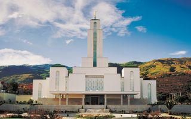
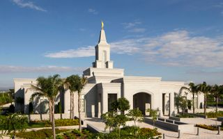
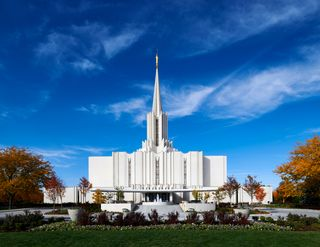
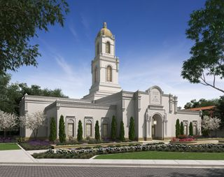
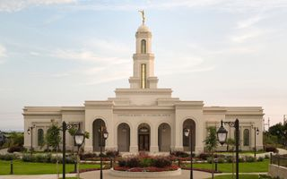

Temple Album
Home
Old
New
Large
Small
Home
Brigham City Utha Temple

Cochabamba Bolivia Temple

Cordoba Argentina Temple
Dallas Texas Temple
Johannesburg South Africa Temple

Jordan River Utha Temple
Logan Utha Temple

La Paz Bolivia Temple

Trujillo Peru Temple